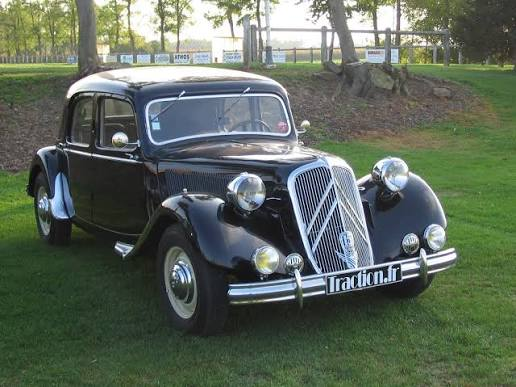
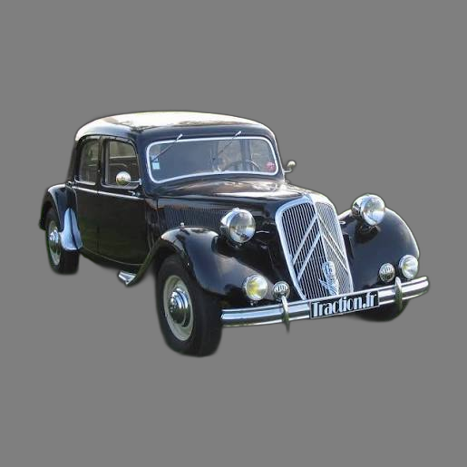
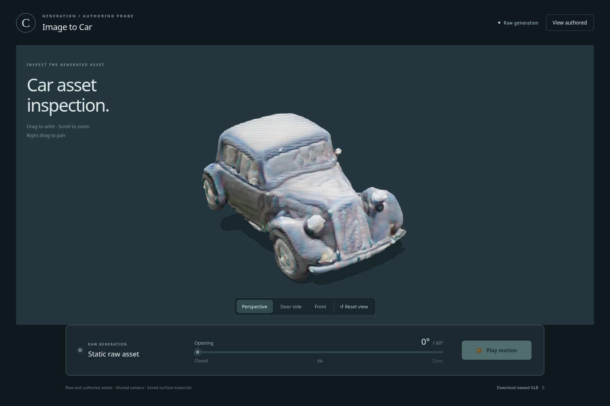
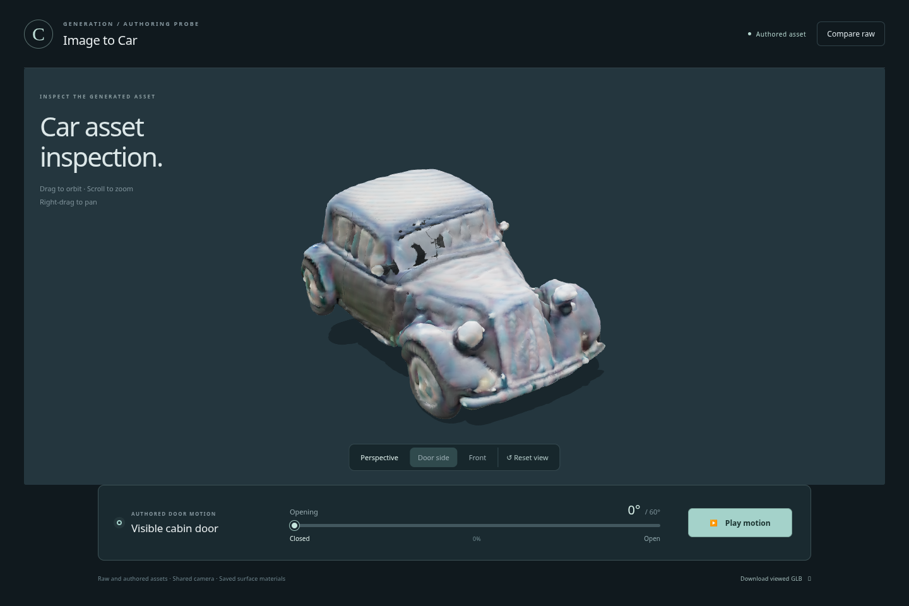
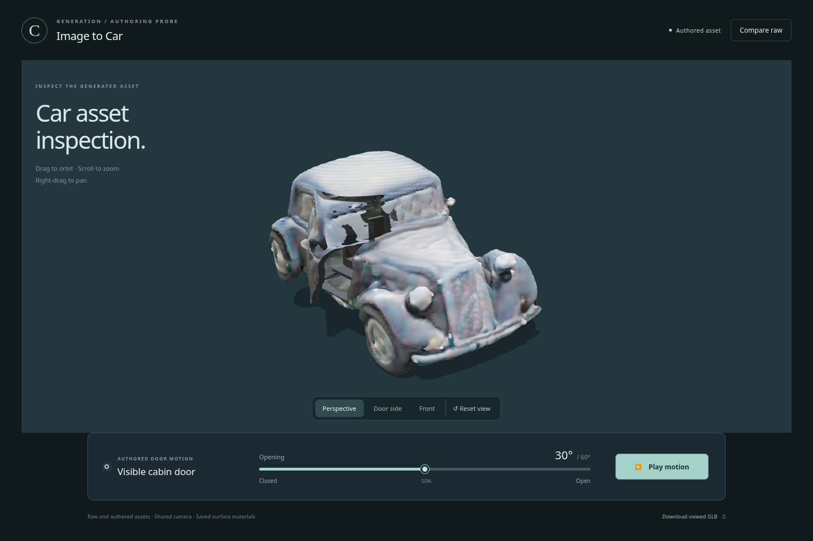
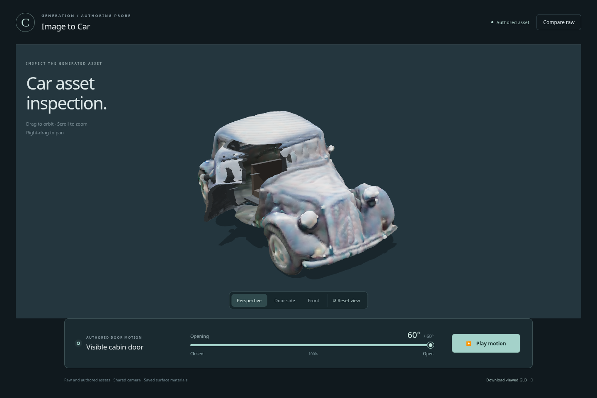
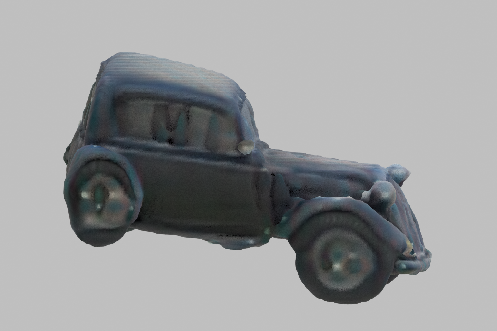
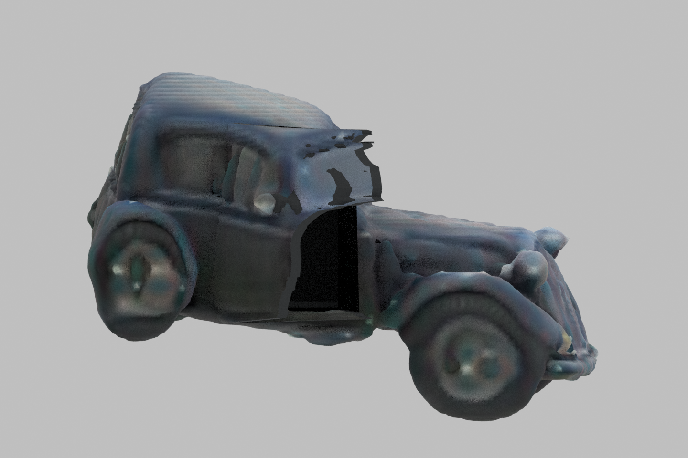
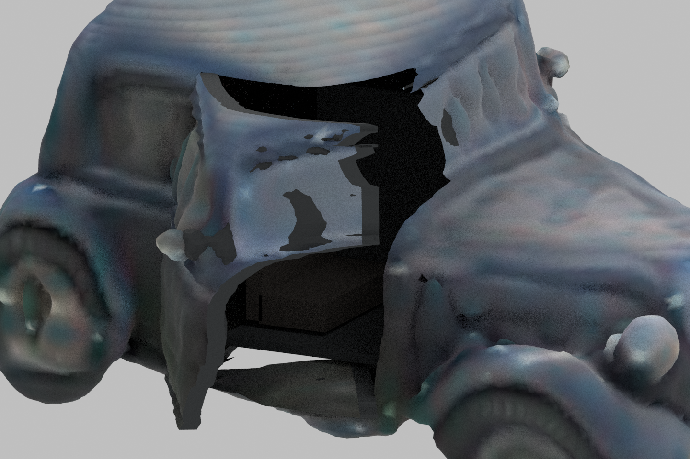

Informative partial: mechanical motion passes; convincing CGI appearance fails. Exact original image, raw output and both authoring revisions are retained. No replacement car or favorable candidate selection.
Browser raw/closed images use the same camera and lighting; authored exterior normals were smoothed. Blender uses a separate neutral studio setup. The jagged window edges, exposed cavity and incomplete floor remain visible. These are observed images from saved assets, without image-generation retouching.
Report · Raw GLB · Authored GLB · Viewer instructions









The original geometry and screenshot files are linked above; no physical clearance or unseen-surface accuracy is certified.